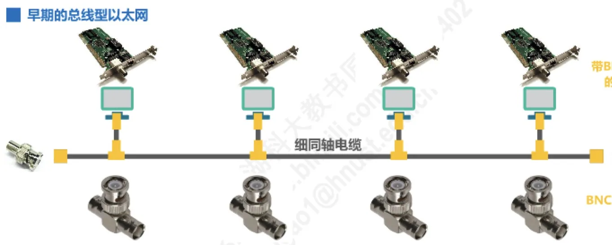
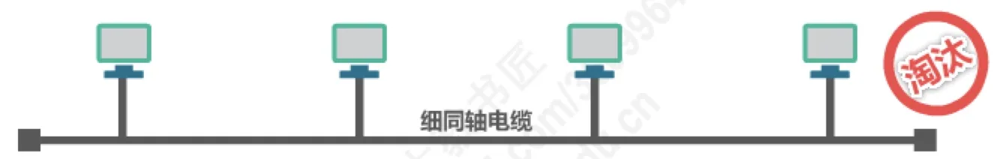
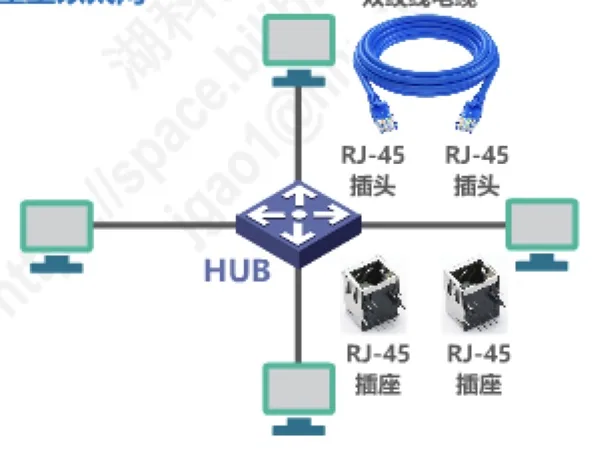
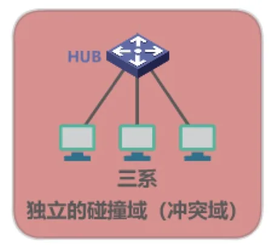
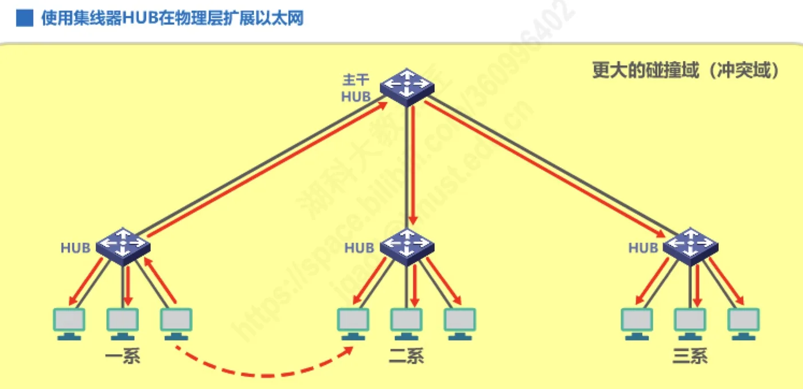
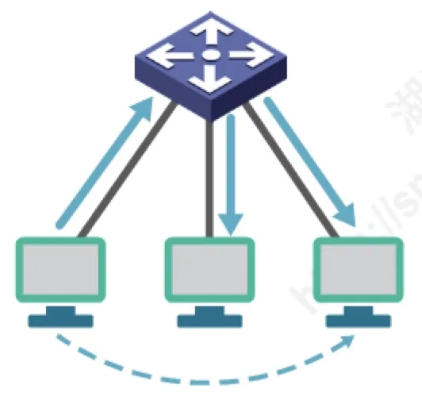
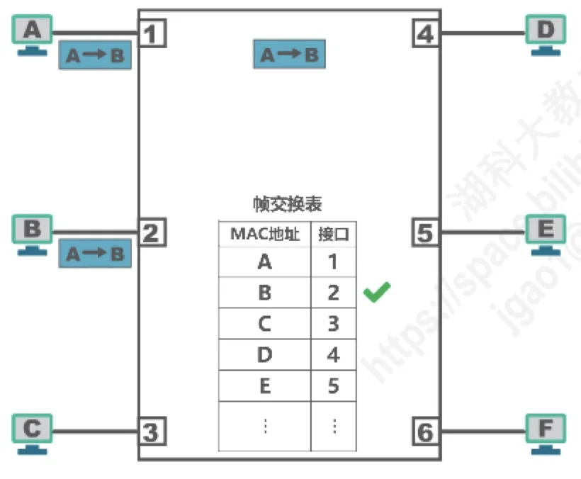
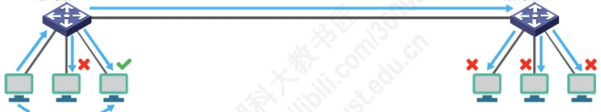
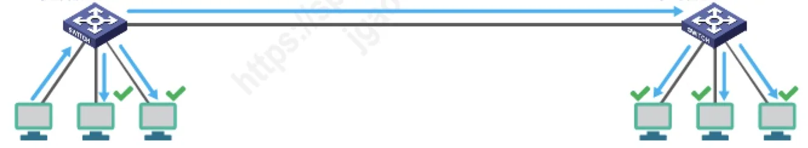
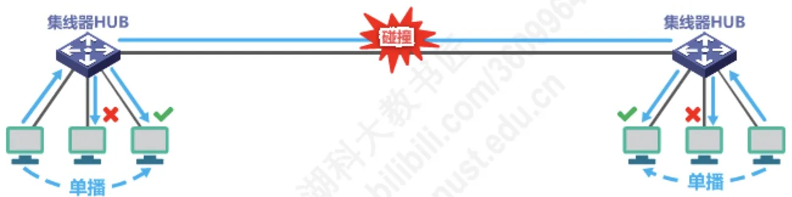

计算机通信与网络 · 第 3 章 数据链路层
3.8 集线器与交换机的区别
以太网的互连设备经历了两代：早期的总线型以太网靠细同轴电缆把主机串在一条总线上，后来改用双绞线加集线器 HUB 的星型结构，如今则普遍使用以太网交换机。本节先看这段演变，再分别弄清集线器与交换机各自的特点，最后用「单播、广播、同时通信、扩展网络」四个场景把两者的差别逐条对比清楚——这也是 3.9 节交换机自学习流程的铺垫。
1. 从总线型以太网到星型以太网
最早的以太网是总线型的：一根细同轴电缆贯穿全线，主机通过带 BNC 接口的网卡经 BNC T 型接口接到电缆上，电缆两端接匹配电阻以吸收信号、避免反射。
这种结构的毛病很直观：每个 T 型接口都是一个机械连接点，连接点多、接触不良的概率就大，任意一处松动都可能让整条总线瘫痪，可靠性差。因此总线型以太网已被淘汰。

取代它的是使用双绞线和集线器 HUB 的星型以太网：每台主机用双绞线电缆（两端为 RJ-45 插头）接到集线器的 RJ-45 插座上，所有主机都以集线器为中心呈星型连接。接线方式变了，但网络的逻辑性质一度没有变（见下一节）。


2. 集线器的特点
不要被星型的外观迷惑，使用集线器的以太网在逻辑上仍然是一个总线网：
- 各站共享总线资源，使用的还是 CSMA/CD 协议；
- 集线器只工作在物理层，它的每个接口仅简单地转发比特，不进行碰撞检测（碰撞检测由各站的网卡完成）；
- 集线器一般都有少量的容错能力和网络管理功能。例如，若网络中某个网卡出了故障，不停地发送帧，集线器可以检测到这个问题，在内部断开与出故障网卡的连线，使整个以太网仍然能正常工作。
3. 用集线器在物理层扩展以太网
一台集线器的接口数量有限，需要接入更多主机时，可以把多台集线器级联起来，这就是在物理层扩展以太网。
当一个单位的几个系各自用一台集线器组网时，每个集线器所连的主机自成一个独立的碰撞域（冲突域）；而一旦把这些集线器级联起来，原本彼此独立的碰撞域就被合并成一个更大的碰撞域。碰撞域变大意味着同一时刻只能有一台主机成功发送，网络规模越大、碰撞概率越高，效率随之下降。


4. 以太网交换机
以太网交换机（SWITCH）是当前以太网中使用最广泛的互连设备，它的工作方式与集线器截然不同：
- 通常都有多个接口，每个接口都可以直接与一台主机或另一个以太网交换机相连，一般都工作在全双工方式；
- 具有并行性，能同时连通多对接口，使多对主机能同时通信，无碰撞（不使用 CSMA/CD 协议）；
- 一般都具有多种速率的接口，例如 10 Mb/s、100 Mb/s、1 Gb/s、10 Gb/s 接口的多种组合；
- 工作在数据链路层（也包括物理层）。它收到帧后，在帧交换表中查找帧的目的 MAC 地址所对应的接口号，然后通过该接口转发帧；
- 是一种即插即用设备，其内部的帧交换表是通过自学习算法自动地逐渐建立起来的（具体流程见 3.9 节）。
交换机转发帧有两种方式：一是存储转发，先把整个帧收下来、检查无误再转发；二是直通交换，采用基于硬件的交叉矩阵，收到目的地址就立刻开始转发，交换时延非常小，但不检查帧是否有差错。


5. 集线器与交换机的对比
下面用同一个网络拓扑，对比两种设备在几个典型场景下的表现。为突出差别，讨论中忽略 ARP 过程，并假设交换机的帧交换表已经「学习好了」。
（1）单播
一台主机发送单播帧时，集线器不懂得看地址，只能把信号复制到除源接口以外的所有接口上，于是同网段的其他主机都会收到这个帧，再由各自的网卡判断目的 MAC 地址是否是自己、不是就丢弃；而交换机会查帧交换表，只从目的主机所在的接口转发出去，其他主机根本收不到。

（2）广播
发送广播帧时，两种设备的表现是一样的：集线器照样复制到所有接口，交换机则查不到对应的单播出口，同样向除源接口外的所有接口转发。所以二者都会把广播帧送到整个广播域。

（3）多对主机同时通信
集线器是共享介质的设备，多对主机同时发送就会发生碰撞，必须靠 CSMA/CD 退避重发；交换机由于每个接口独占带宽且工作在全双工方式，多对主机可以同时通信而互不碰撞。这是两者在性能上最本质的差别。

（4）扩展网络时的影响
用集线器扩展网络，会同时扩大碰撞域和广播域；用交换机扩展网络，则会扩大广播域、隔离碰撞域——因为交换机的每个接口自成一个独立的碰撞域。注意交换机不隔离广播域（划分 VLAN 的情况除外，见 3.11 节）。
把以上差别整理成表：
| 对比项 | 集线器 HUB | 以太网交换机 SWITCH |
|---|---|---|
| 地位 | 早期以太网的互连设备，已淘汰 | 目前以太网中使用最广泛的互连设备 |
| 工作层次 | OSI 体系结构的物理层 | OSI 体系结构的数据链路层（也包括物理层） |
| 转发依据 | 对接收到的信号进行放大、转发 | 根据 MAC 地址对帧进行转发 |
| 以太网的形态 | 仍属于共享总线式以太网：所有主机共享总线带宽 | 称为交换式以太网：可根据 MAC 地址过滤帧 |
| 碰撞域（冲突域） | 互连起来的所有主机属于同一个碰撞域 | 每个接口是一个独立的碰撞域，即隔离碰撞域 |
| 广播域 | 属于同一个广播域 | 不隔离广播域（VLAN 除外） |
本节小结
- 以太网互连方式从总线型（细同轴电缆、BNC T 型接口、匹配电阻，机械连接点多、已淘汰）走向星型（双绞线 + 集线器 HUB），再走向交换式以太网；
- 集线器只工作在物理层，仅转发比特、不做碰撞检测，逻辑上仍是总线网，各站共享带宽并使用 CSMA/CD；它带有少量容错与网管功能，级联后会把各独立碰撞域合并成一个更大的碰撞域；
- 交换机工作在数据链路层（也包括物理层），多接口、全双工、可并行转发而无碰撞，按帧交换表查目的 MAC 地址转发帧，帧交换表由自学习算法自动建立；转发方式有存储转发与直通交换两种，后者时延小但不检查差错；
- 单播时集线器泛洪、交换机定向转发；广播时两者都泛洪；多对主机同时通信时集线器碰撞、交换机可并行；
- 扩展网络时，集线器同时扩大碰撞域和广播域，交换机扩大广播域但隔离碰撞域（每个接口一个独立碰撞域），且不隔离广播域（VLAN 除外）。